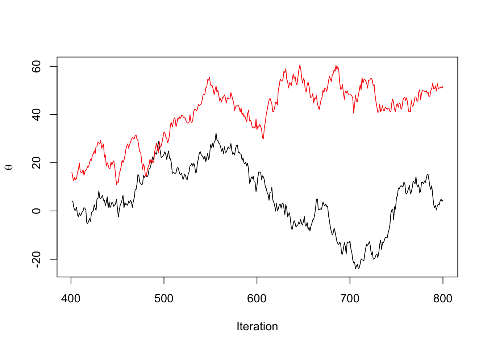
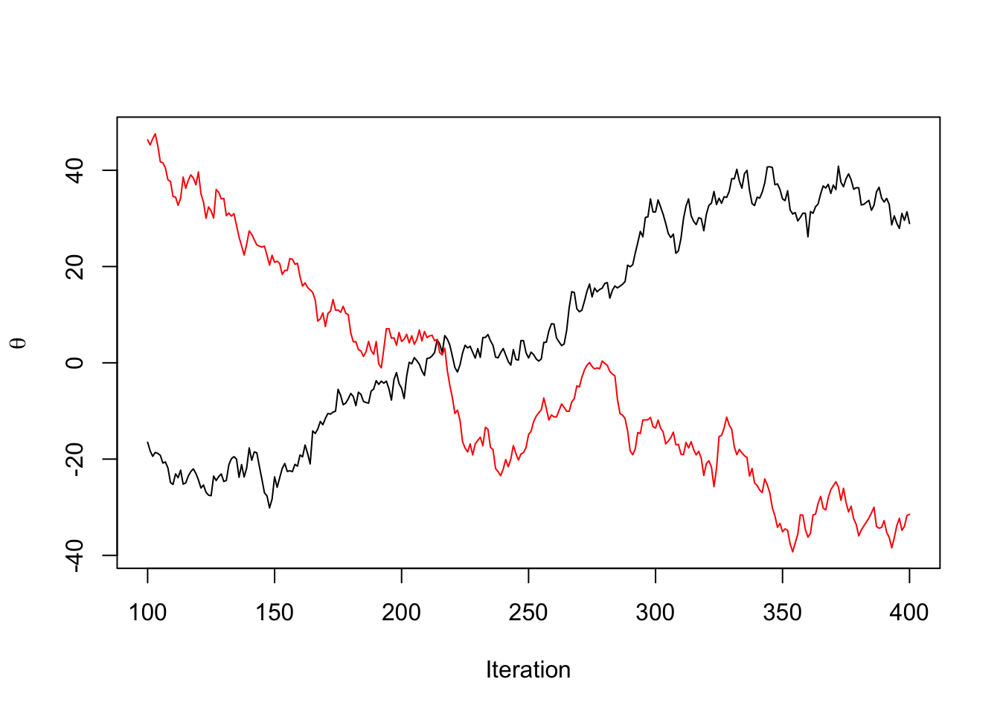

MCMC and diagnostics
Gibbs sampling
See Tanner and Wong (1987) for more details; what follows is an abbreviated presentation of their work, with bits of Gelfand and Smith (1990) thrown in.
Let \(p(\theta_1, \theta_2 \mid y)\) be the posterior of interest.
We can represent the marginal posterior for \(\theta_1\) as: \[ p(\theta_1 \mid y) = \int_{\Omega_{\theta_2}} p(\theta_1 \mid y, \theta_2) p(\theta_2 \mid y) d\theta_2, \] and similarly for \(\theta_2\): \[ p(\theta_2 \mid y) = \int_{\Omega_{\theta_1}} p(\theta_2 \mid y, \theta_1) p(\theta_1 \mid y) d\theta_1 \]
Plugging the second expression into the first yields:
\[ p(\theta_1 \mid y) = \int_{\Omega_{\theta_2}} p(\theta_1 \mid y, \theta_2) \int_{\Omega_{\theta_1}} p(\theta_2 \mid y, \theta_1^\prime) p(\theta_1^\prime \mid y) d\theta^\prime_1 d\theta_2, \]
which we can rearrange into:
\[ p(\theta_1 \mid y) = \int_{\Omega_{\theta_1}} \int_{\Omega_{\theta_2}} p(\theta_1 \mid y, \theta_2) p(\theta_2 \mid y, \theta_1^\prime) d\theta_2 p(\theta_1^\prime \mid y) d\theta^\prime_1, \] Let \(P(\theta \mid \theta^prime)\) be the proposal distribution, which conditions on \(\theta^\prime\): \[ P(\theta \mid \theta^\prime) = \int_{\Omega_{\theta_2}} p(\theta_1 \mid y, \theta_2) p(\theta_2 \mid y, \theta_1^\prime) d\theta_2 \] Then the equation \[ g(\theta_1) = \int_{\Omega_{\theta_1}} P(\theta_1 \mid \theta_1^\prime) g(\theta_1^\prime) d\theta^\prime_1, \] is an integral equation. Given weak conditions on \(P(\theta_1 \mid \theta^\prime_1)\), \(p(\theta_1 \mid y)\) is a unique solution for the equation.
We can define the integral transformation: \(T g = \int_{\Omega_{\theta_1}} P(\theta_1 \mid \theta_1^\prime) g(\theta_1^\prime) d\theta^\prime_1\), which takes an \(L_1\) integrable function, \(\lVert g \rVert_1 = \int_{\Omega_{\theta_1}} \abs{g(\theta_1)} d\theta_1 < \infty\) and yields another \(L_1\) integrable function.
One thing to note is that \(\lVert T g \rVert_1 = \lVert g \rVert_1\), and, because \(P(\theta \mid \theta^\prime)\) is a probability density in \(\theta\) for each \(\theta^\prime\), it integrates to \(1\), \[ \begin{aligned} \int_{\Omega_{\theta_1}} \abs{(T g)(\theta_1)} d\theta_1 & = \int_{\Omega_{\theta_1}} \int_{\Omega_{\theta_1}} P(\theta_1 \mid \theta_1^\prime) g(\theta_1^\prime) d\theta^\prime_1 d\theta_1 \\ & = \int_{\Omega_{\theta_1}} \int_{\Omega_{\theta_1}} P(\theta_1 \mid \theta_1^\prime)d\theta_1 g(\theta_1^\prime) d\theta^\prime_1 \\ & = \int_{\Omega_{\theta_1}} 1 g(\theta_1^\prime) d\theta^\prime_1 \\ & = \int_{\Omega_{\theta_1}} \abs{g(\theta_1^\prime)} d\theta^\prime_1 \\ & = \lVert g \rVert_1 \end{aligned} \] Also note that if \(f(\theta) \geq g(\theta)\) for all \(\theta\), then \(T f \geq T g\) for all \(\theta\).
\[ \begin{aligned} T f - T g & = \int_{\Omega_{\theta_1}} P(\theta_1 \mid \theta_1^\prime) f(\theta_1^\prime) d\theta^\prime_1 - \int_{\Omega_{\theta_1}} P(\theta_1 \mid \theta_1^\prime) g(\theta_1^\prime) d\theta^\prime_1 \\ & = \int_{\Omega_{\theta_1}} P(\theta_1 \mid \theta_1^\prime) (f(\theta_1^\prime) - g(\theta_1^\prime)) d\theta^\prime_1 \\ & \geq 0 \end{aligned} \] With these two facts, we can show that given a function \(g_i\), \(g_{i+1} = T g_i\) and a solution, which we’ll call \(g^\star \equiv p(\theta_1 \mid y)\), which solves the integral equation, that \(\lVert g_{i+1} - g^\star \rVert \leq \lVert g_{i} - g^\star \rVert\).
\[ \begin{aligned} \norm{g_{i+1} - g^\star} & = \norm{T (g_{i} - g^\star)} \\ & \leq \norm{T \abs{g_{i} - g^\star}} \\ & = \norm{g_{i} - g^\star} \end{aligned} \] There are two more conditions that lead to \(g^\star\) being the unique solution to the equation, and to another desirable characteristic for our computational schemes, which is called geometric ergodicity: \[ \norm{g_{i+1} - g^\star} \leq \alpha^{i}(g_0) \norm{g_{0} - g^\star}, \, \alpha \in (0, 1) \] as long as \(\sup_\theta g_0(\theta) / g^\star(\theta) < \infty\).
This condition is the following: For every \(\theta_0 \in \Omega_{\theta}\) there is an open neighborhood \(U\) of \(\theta_0\) so that: \[ P(\theta \mid \theta^\prime) > 0, \forall (\theta, \theta^\prime) \in U \]
\[ P(\theta \mid \theta^\prime) \leq M < \infty \,\, \forall (\theta, \theta^\prime) \in \Omega_\theta \]
We can use this fact to show that the scheme will converge to \(p(\theta_1 \mid y)\), the unique posterior for \(\theta_1\), and the stationary distribution for the proposal \(P(\theta \mid \theta^\prime\). I won’t go over the proof, but you can see it in section 6 of Tanner and Wong (1987).
This suggests the following algorithm, which we’ll call Gibbs sampling, to generate draws from an unknown posterior:
Determine starting values \(\theta_1^0, \theta_2^0\)
For \(t=1, \dots, S\)
Draw \(\theta_1^{t+1} \sim p(\theta_1 \mid \theta_2^t, y)\)
Draw \(\theta_2^{t+1} \sim p(\theta_2 \mid \theta_1^{t+1}, y)\)
Discard \(S/2\) iterations, and keep the set of draws \(\{ (\theta_1^s, \theta_2^s) \mid s = S/2+1, ,\dots, S\}\).
The final set of draws \(S/2\) draws are approximately distributed according to \(p(\theta_1, \theta_2 \mid y)\)
The assumptions that make the algorithm work are key. Tanner and Wong (1987) note that \(\alpha\) is dependent on the starting distribution, and \(\alpha\) can be arbitrarily close to \(1\) for unbounded parameter spaces.
The condition on the starting distribution mean that a \(g_0\) with compact support might be a good choice, because we avoid a situation where \(\sup_\theta g_0(\theta) / g^\star(\theta)\) is large because \(g_0\) has tails that are heavier than those of \(g^\star(\theta)\) as \(\norm{\theta} \to \infty\).
The problem with Gibbs is that it often moves slowly in high dimensions when there is high correlation between components.
Quantifying Uncertainty in MCMC estimates
Given a set of draws \(\{\theta_s, s = 1, \dots, S\}\) from a Gibbs sampler, we want a way to assess how well our empirical average: \[ \bar{f} = \frac{1}{S} \sum_{s = 1}^S f(\theta_s) \] approximates the true expectation: \[ \Exp{f(\theta)}{p(\theta \mid y)} \] Under fairly general conditions, \[ \sqrt{n}(\bar{f} - \Exp{f}) \overset{d}{\to} N(0, \sigma^2) \] The wrinkle is that \(\sigma^2\) wont equal \(\text{Var}_{p(\theta \mid y)}(f(\theta))\) because our draws aren’t independent. In fact, as shown in Geyer (2005), we can compute the variance of the left-hand side: \[ \begin{aligned} \text{Var}(\sqrt{n}(\bar{f} - \Exp{f})) & = n \text{Var}(\bar{f}) \\ & = \frac{1}{n}\sum_{s=1}^n \text{Var}(f(\theta_s)) + \frac{2}{n} \sum_{i=1}^{n-1} \sum_{j={i+1}}^{n} \text{Cov}(f(\theta_i),f(\theta_j)) \end{aligned} \] We’ll assume we have a stationary chain, so \(\text{Var}(f(\theta_s)) = \gamma_0\), and \(\gamma_k = \text{Cov}(f(\theta_{i}),f(\theta_{i+k}))\), which leads to
\[ \begin{aligned} \frac{1}{n}\sum_{s=1}^n \text{Var}(f(\theta_s)) + \frac{2}{n} \sum_{i=1}^{n-1} \sum_{j={i+1}}^{n} \text{Cov}(f(\theta_i),f(\theta_j)) & = \gamma_0 + \frac{2}{n} \sum_{i=1}^{n-1} \sum_{j={i+1}}^{n} \gamma_{j - i} \\ & = \gamma_0 + \frac{2}{n} \sum_{i=1}^{n-1} (n - i) \gamma_i \end{aligned} \] If things are well-behaved, the series on the right converges to: \[ \begin{aligned} \sigma^2 = \gamma_0 + 2 \sum_{i=1}^{\infty} \gamma_i \end{aligned} \] Thus, \[ \sqrt{n}(\bar{f} - \Exp{f}) \overset{d}{\to} N(0, \gamma_0 + 2 \sum_{i=1}^{\infty} \gamma_i) \] If we had independent draws of \(\theta_i\), we would instead have \[ \sqrt{n}(\bar{f} - \Exp{f}) \overset{d}{\to} N(0, \gamma_0) \] The ratio of these variances: \[ \frac{\gamma_0}{\gamma_0 + 2 \sum_{i=1}^{\infty} \gamma_i} = \frac{1}{1 + 2 \sum_{i=1}^{\infty} \frac{\gamma_i}{\gamma_0}} \] Can be used to compute something called the effective sample size from an MCMC sample of \(S\) draws: \[ n_\text{eff} = \frac{n}{1 + 2 \sum_{i=1}^{\infty} \rho_k} \] where \(\rho_k\) is the autocorrelation at the \(k^\text{th}\) lag. The effective sample size represents the number of independent draws with an equivalent variance to the samples from an MCMC chain.
These figures can be used to benchmark MCMC algorithms by computing \(n_\text{eff}/\text{sec}\) of computing time, or \(n_\text{eff}/\text{flop}\), where flop is floating point operation.
Convergence diagnostics
One question we might have is how to assess if we’ve run enough iterations so that we’re drawing from the stationary distribution. We won’t ever truly reach the stationary distribution, because, as we can see above, we only ``reach” the stationary distribution asymptotically.
However, we can use diagnostics to determine if there is any evidence that we haven’t converged. The most common heuristic for this is called \(\hat{R}\), which was proposed in Gelman and Rubin (1992), and is thus called the Gelman-Rubin statistic, or R-hat.
The statistic relies on the fact that asymptotically, running the MCMC chain long enough from any starting distribution will yield samples from the stationary distribution. Thus, if we choose many well-dispersed starting points, and run our sampler for each starting point, the samples generated from each starting point should be indistinguishable from each other.
TK: draw one example on the board of chains that would look stationary for a single chain, but are not if we have two
One way to assess differences between chains is to compare the within-chain variance for a parameter of interest, say \(\theta\) to the combined variance of all the chains. Let \(\theta^{(sm)}\) be the draw for \(\theta\) from the \(m^\mathrm{th}\) chain out of \(M\) chains at the \(s^\mathrm{th}\) iteration. Let \(\bar{\theta}^{(.m)} = \frac{1}{S}\sum_{s=1}^S \theta^{(sm)}\), \(\bar{\theta}^{(..)} = \frac{1}{M}\sum_{m=1}^M \bar{\theta}^{(.m)}\). Let \(v_m = \frac{1}{S-1}\sum_{s=1}^S (\theta^{(sm)} - \bar{\theta}^{(.m)})^2\), and let \(W = \frac{1}{M}\sum_{m=1}^M v_m\). We also compute the between-chain variance, so \(B = \frac{S}{M-1}\sum_{m=1}^M (\bar{\theta}^{(.m)} - \bar{\theta}^{(..)})^2\)
Then we estimate the variance of the posterior with the following consistent but biased estimator: \[ \widehat{\text{var}}(\theta \mid y) = \frac{S-1}{S} W + \frac{B}{S} \] We can see that this is likely an oversetimate of the variance because as \(S\to\infty\), \(v_m \to \text{var}(\theta \mid y)\), and the first factor converges to the same, while the second factor goes to zero.
The term \(W\) underestimates the posterior variance for any finite \(S\) because each chain hasn’t explored the full extent of the tails of the distribution, and thus will have a smaller variance than the true variance.
The final expression for \(\hat{R}\) is \[ \hat{R} = \sqrt{\frac{\widehat{\text{var}}(\theta \mid y)}{W}} \] The statistic is calculated so that each chain in the above calculation is the first or second half of a single chain. Thus, if we ran two MCMC chains, \(M=4\) above.
The reason for this is to catch scenarios where each chain is nonstationary, but the chains are marginally indistinguishable.

The version that Stan uses is outlined here: Vehtari et al. (2021). It uses an \(\hat{R}\) that is computed using normlized ranks, which means we compute the rank \(r^{(sm)}\) of each draw of a parameter with respect to the pooled draws from all the chains. Then the ranks are trasnformed to z-scores using: \[ z^{(sm)} = \Phi^{-1}\lp\frac{r^{(sm)} - 3/8}{S M + 1/4}\rp \] Then the \(\hat{R}\) is computed using \(z^{(sm)}\) in place of \(\theta^{(sm)}\) above. This has the effect of making the statistic useful in scenarios where there is an infinite mean (e.g. when we’re sampling from a Cauchy distribution, or something with similarly heavy tails).
References
Gelfand, Alan E, and Adrian FM Smith. 1990. “Sampling-Based Approaches to Calculating Marginal Densities.” Journal of the American Statistical Association 85 (410): 398–409.
Gelman, Andrew, and Donald B Rubin. 1992. “Inference from Iterative Simulation Using Multiple Sequences.” Statistical Science 7 (4): 457–72.
Geyer, Charles J. 2005. “Markov Chain Monte Carlo Lecture Notes.”
Tanner, Martin A, and Wing Hung Wong. 1987. “The Calculation of Posterior Distributions by Data Augmentation.” Journal of the American Statistical Association 82 (398): 528–40.
Vehtari, Aki, Andrew Gelman, Daniel Simpson, Bob Carpenter, and Paul-Christian Bürkner. 2021. “Rank-Normalization, Folding, and Localization: An Improved r ̂ for Assessing Convergence of MCMC (with Discussion).” Bayesian Analysis 16 (2): 667–718.